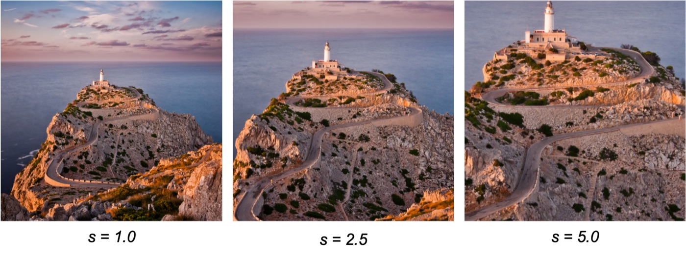
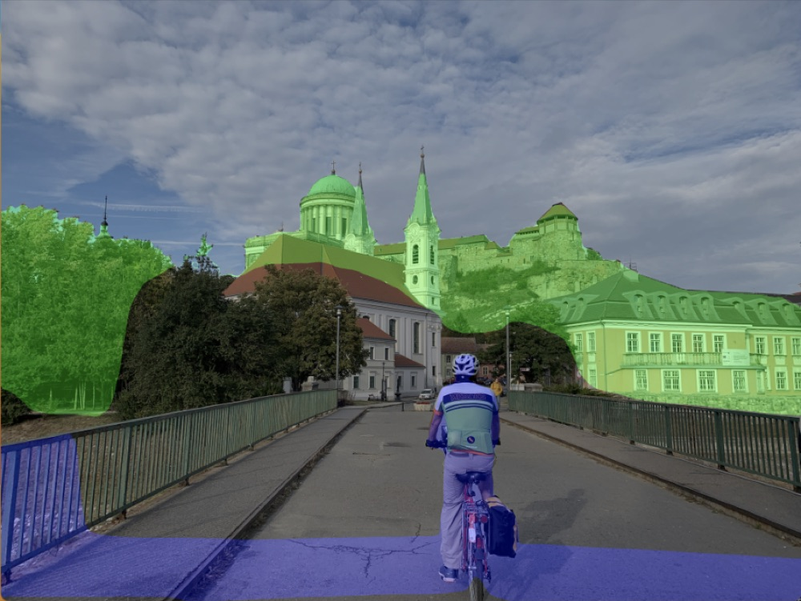
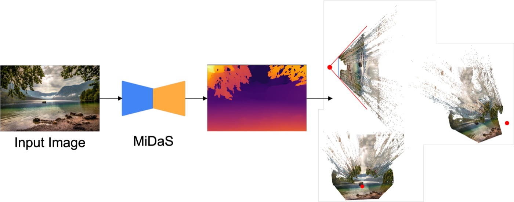
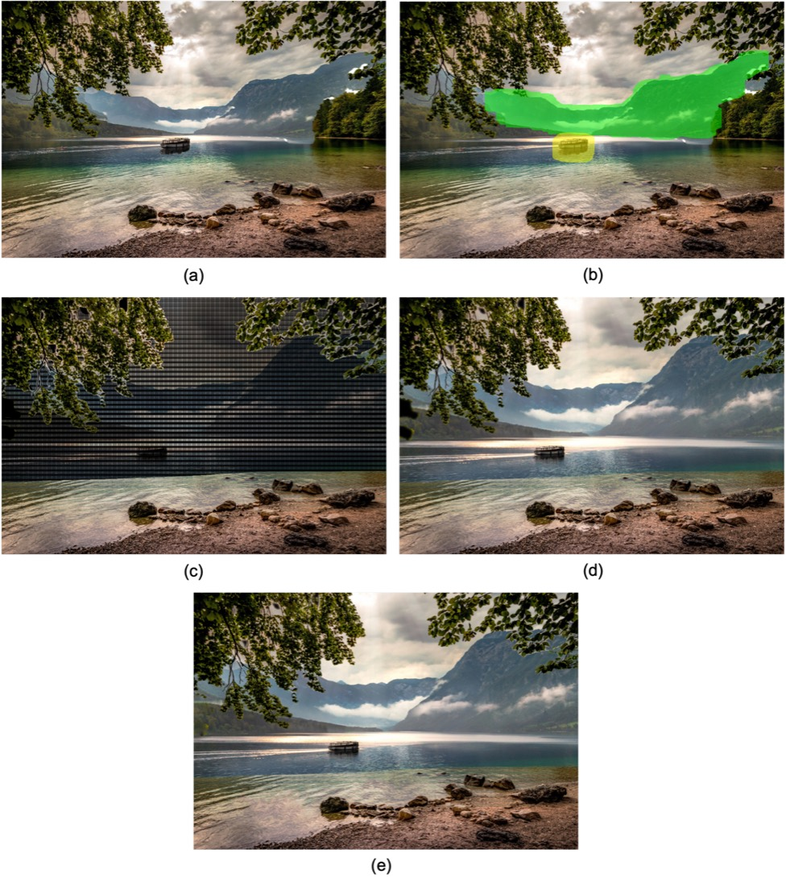
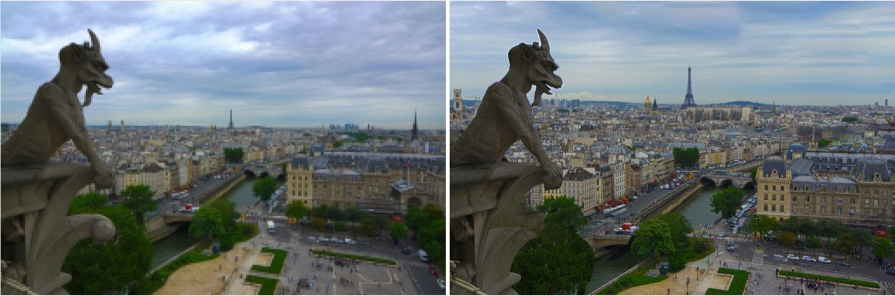
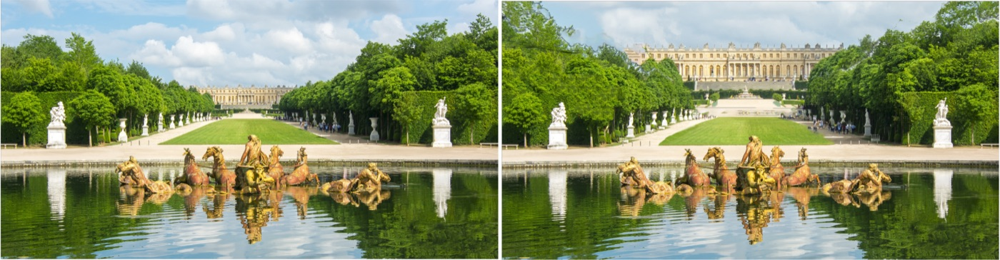

ZoomShop
Implementation of "ZoomShop: Depth-Aware Editing of Photographic Composition" (Liu et al., Computer Graphics Forum 2022). ZoomShop lets you change the size and foreshortening of things at different depths in a photo after it's taken, for example making a distant mountain range loom larger without touching the foreground.
Try It
Select a value on the Depth Range slider to select a depth range to scale. Then scale it with the Scale slider to resize just that layer.
This is a lightweight JS port of my Python code for demo purposes. It uses the same projection, but holes are filled with a quick push-pull blur instead of the grid fill and content-aware fill used for the results below, and the edit fades out at the edges of the selected depth range. Depth maps were regenerated with MiDaS (DPT-Large).
Background
A standard (linear perspective) camera with focal length f and image half-width and half-height Pw, Ph maps a 3D point (X, Y, Z) to image coordinates in [−1, 1]:
ZoomShop generalizes this by replacing the depth-dependent denominator with a function b(z) that the user controls, where λ = Pw / Ph:
Setting b(z) = Phz / f recovers the normal camera, and scaling b uniformly is just zooming in and cropping. The interesting edits come from making b non-linear in depth:
- Scale. Scaling b differently over different depth ranges resizes only the things at those depths.
- Foreshortening. Changing the slope ∂b/∂z acts like changing the focal length over a depth range, giving more or less foreshortening.

Implementation
- Depth. Run MiDaS on the photo to get a disparity map d, normalize it to [0, 1], and convert it to (non-metric) depth.
- Back-project. Invert the camera model, with the paper's vertical field of view of 55°, to turn every pixel into a colored 3D point.
- Select and edit. Pick depth ranges (clicking a pixel selects everything within ±ε of its depth) and choose a scale for each, which makes b(z) non-linear.
- Re-project. Project the edited points back into the image. For scaling, this works out to scaling each selected point's image coordinates about the image center.
- Fill holes. Pixels that no point lands on are filled with an iterative Poisson-equation grid fill (gridfill), and anything left with Photoshop's Content-Aware Fill, as the ZoomShop authors do.



Differences from the paper. The paper builds a per-pixel mesh, but it isn't clear how its vertices are triangulated, so I render the per-pixel points directly and fill the gaps afterwards. I also didn't build the paper's full interface: depth ranges and scales were picked with a minimal click-to-select tool and tuned by hand.
Results


Limitations and next steps
- Results depend heavily on the depth map. MiDaS output is noisy, and parts of the same object can land at quite different depths. The ZoomShop authors clean up the disparity map by hand in Photoshop (5 minutes to 3 hours for a novice); I used MiDaS output directly to keep the workflow simple.
- Build a fuller editing interface, and look into cleaner depth prediction so manual cleanup isn't needed.
References
- Sean J. Liu, Maneesh Agrawala, Stephen DiVerdi, and Aaron Hertzmann. "ZoomShop: Depth-Aware Editing of Photographic Composition." Computer Graphics Forum, 2022.
- Abhishek Badki, Orazio Gallo, Jan Kautz, and Pradeep Sen. "Computational Zoom: A Framework for Post-Capture Image Composition." ACM TOG, 2017.
- René Ranftl, Katrin Lasinger, et al. "Towards Robust Monocular Depth Estimation: Mixing Datasets for Zero-Shot Cross-Dataset Transfer." 2019.
- René Ranftl, Alexey Bochkovskiy, and Vladlen Koltun. "Vision Transformers for Dense Prediction." 2021. (DPT, used for the demo's depth maps)
- Andrew Dawson. gridfill: Fill missing values in a grid.